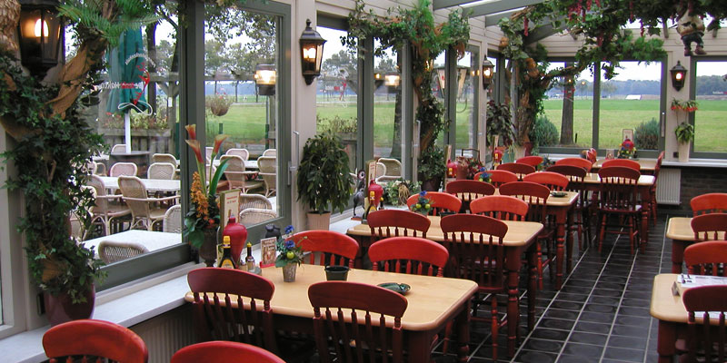
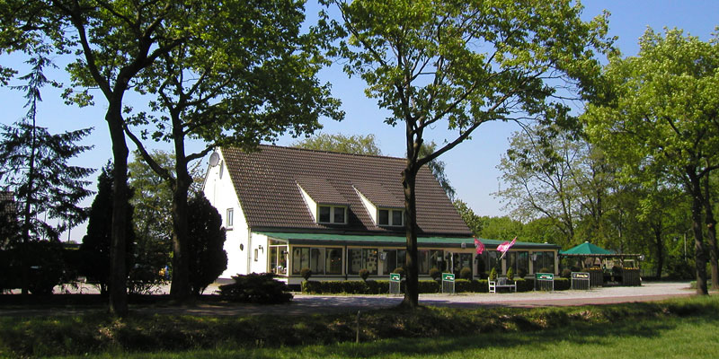

Afgelegen, en toch centraal
De Rode Haktol ligt midden tussen de weilanden en boerderijen, tussen Boxtel, Oisterwijk, Liempde en Best. Voor wie de Brabantse Kempen bezoekt toch centraal: vlak bij het pittoreske Oirschot en het natuurgebied de Kampina, met z'n vele vennen.
Vroeger was het een koeienstal. Die werd verbouwd tot pannenkoekenhuis en later uitgebreid met een serre, met uitzicht over het land.
- Heel veel soorten pannenkoeken, van naturel tot boeren
- Lunch tot 15.00 uur
- Afhalen kan ook
- Speciale wenseno.a. glutenvrij, eivrij of melkvrij

